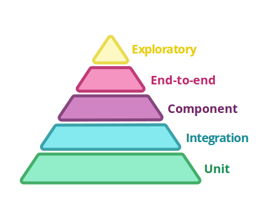

Theory
|
Practice
|
|  |
Consumer-Driver Contract /CDC/ tests is between Component tests and Integration tests
We are developing a service for the customer!
MTBF: Mean Time Between Failures
MTTR: Mean Time to repair
This is a business decision.
Use monitoring tools to detect deffects.
Blue/Green deployment
Chaos monkey
Canary release
|
|
Testing one 'modul' of a micro service. With real dependencies. One modul is often an interface.
Testing one 'modul' of a micro service. With real dependencies. Can be implemented with unit test tools, but need an environment. Use if you can't trust in your 3rd party High environment complexity because of moveing parts. |
Testing one micro service against contracts.
It ensure the health of the whole system.
The output can be a compatibility matrix.
Testing one micro service test doubles dependencies.
So we have to deploy the service into a mocked environment and configure it to use them.
|
Test Journeys, Not Stories If you create e2e tests for all stories, you may create inverse pyramid. (healthy: 10-100 for the whole system) too many? too slow? brittle? -> normalization of devianceTesting the whole system with all 3th party. High complexity because of moveing parts. |
if a test is brittle, then remove it!
always try to replace test with one or more tests in lower level
You can use a simple http server and json resources.
A mock tool. (Can verify too)
A cdc tool. Can generate mock server from contract definitions.
{
"provider": {
"name": "Event API"
},
"consumer": {
"name": "Source System"
},
"interactions": [
{
"description": "A POST request with an event",
"request": {
"method": "post",
"path": "/events",
"body": {
"eventId": "7622cb68-3ee5-4f93-a32b-da82f3ff95b5",
"timestamp": "2014-05-13 02:03:33 UTC",
"host": null,
"remoteAddress": null,
"eventType": null,
"user": null
},
"headers": {
"Content-Type": "application/json"
}
},
"response": {
"status": 200,
"headers": {
"Content-Type": "application/json"
}
}
}
],
"metadata": {
"pactSpecificationVersion": "1.0.0"
}
}
A cdc tool with a server. You can get contracts of different version of 3th parties.